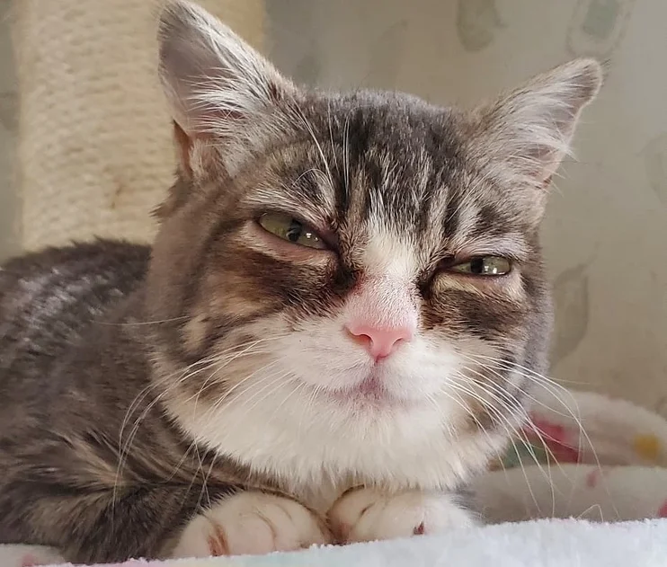

Meet Winky, the extraordinary dwarf cat whose tiny stature belies his larger-than-life personality. With his endearing short legs and sweet, round face, Winky captures the hearts of everyone he meets.
Despite his unique appearance, Winky doesn't let his dwarfism define him. Instead, he embraces each day with boundless energy and a playful spirit that knows no bounds. Whether he's pouncing on toy mice or exploring new corners of the house, Winky approaches life with a sense of adventure and curiosity.
But it's not just Winky's antics that make him special; it's his gentle nature and loving demeanor that truly set him apart. He's always there to offer a comforting purr or a soft nuzzle to anyone in need, spreading warmth and joy wherever he goes.
To his human companions, Winky is more than just a pet; he's a cherished member of the family. His presence brings laughter and light into their lives, reminding them to appreciate the beauty in every moment, no matter how small.
In a world full of challenges, Winky serves as a reminder that true strength comes from within. Despite facing obstacles due to his dwarfism, he remains resilient and full of love, inspiring those around him to do the same. Winky may be small in size, but his heart is as big as they come.
Animal: Cat
color: white and Grey
Cat Name: Winky
Nickname: Winky the Dwarf
